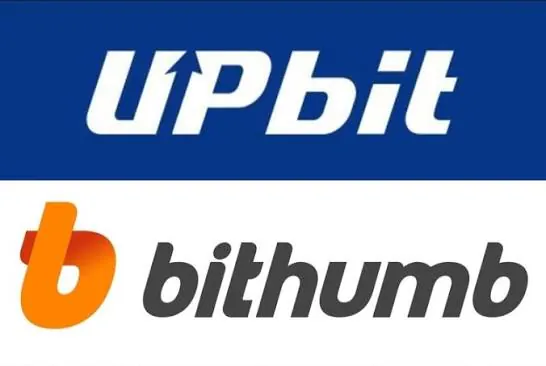
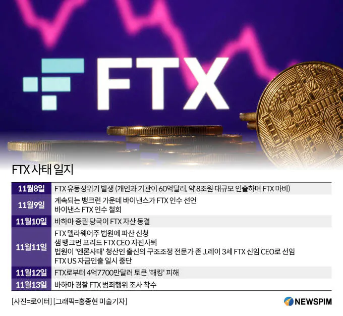
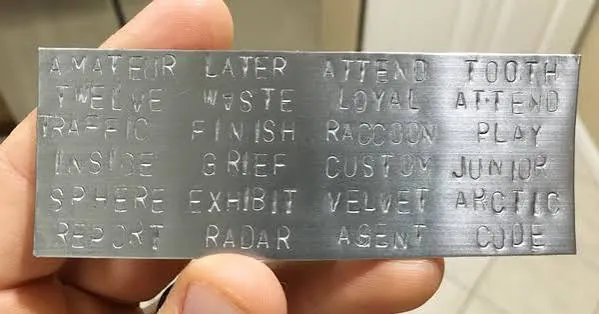
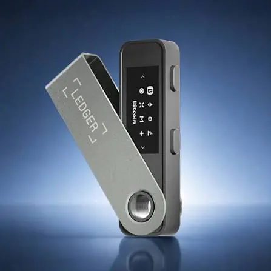
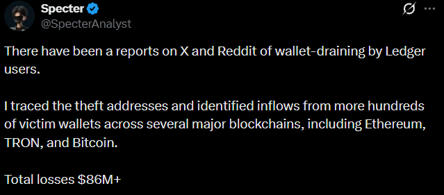
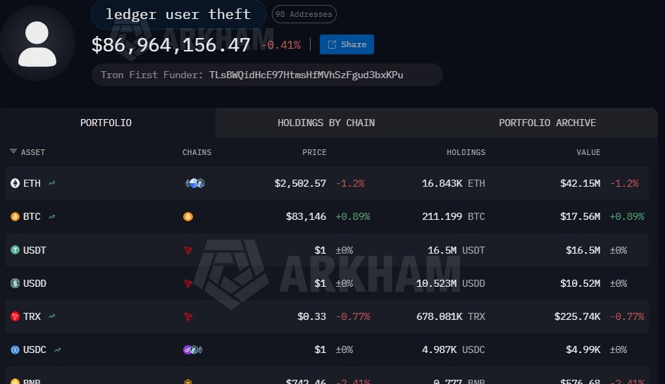
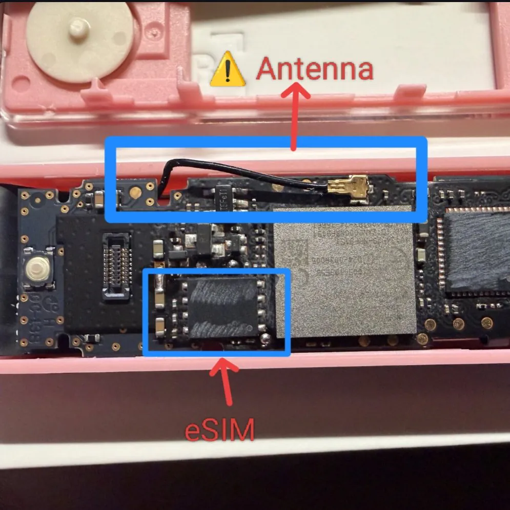
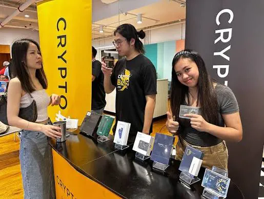

코인을 보관하는 두 가지 방법
보통 코인을 보관하는 방법은 크게 두 가지가 있다.
가장 쉬운 방법은 업비트, 빗썸, 바이낸스 등의 중앙화 거래소에 보관하는 방법이고
다른 하나는 개인지갑에 보관하는 방법이다.
보통 코인 = 거래소라고 생각하는 일반적인 사람들은 대부분 거래소에 자산을 보관한다.
주식을 증권사 계좌에 넣어두듯이 코인도 거래소 계정에 넣어두는 것이 익숙하기 때문이다.

하지만 코인판에선 거래소에 코인을 보관하지말라는 이야기를 자주 접할 수 있다.
왜냐하면 그간 수 많은 거래소들이 해킹 피해를 입어 사용자 자금을 탈취당하거나
혹은 2014년 마운틴곡스, 2022년 FTX 사태처럼 거래소 자체가 파산해버려
장기간 자산을 돌려받지 못하는 경우가 있기 때문이다.

그래서 코인을 정말 장기홀딩하는 사람들 중 상당 수는 개인지갑에 이를 보관하게 되고
이를 셀프 커스터디라고 부른다.
셀프 커스터디의 리스크

하지만 개인지갑에 자산을 보관하는 것은 항상 리스크가 따른다.
개인지갑은 생성할 때 사용하는 니모닉 문구를 알고있다면 누구나 그 지갑에 대한 소유권을 가질 수 있어
이를 잘 관리하지 못할 경우 탈취 위험이 뒤따르며
사용하는 PC에 설치되는 악성코드로 인해 자금이 탈취 당하거나
혹은 악의적으로 짜여진 스마트 컨트랙트에 모든 자산을 드레인 당할 수도 있다.
셀프커스터디는 거래소 리스크로 부터는 안전해지지만 그 만큼 더 많은 책임과 노력을 기울여야한다.
하드웨어 월렛
그래서 장기간, 많은 크립토 자산을 셀프 커스터디하는 사람들은 보통
하드웨어 월렛 이라는 것을 사용한다.

USB 크기 정도의 하드웨어 월렛은 사용자가 자금을 전송하거나
혹은 스마트 컨트랙트와 상호작용 할 때
사용자가 지정한 비밀번호나 인증체계를 하드웨어 월렛에 입력해야만
자금을 이동할 수 있도록 만든 제품으로
악성코드나 취약점 문제에 있어 어느 정도의 안전망 역할을 해왔다.
(물론 하드웨어 월렛 역시 니모닉 문구 기반이라 실수로 니모닉 문구를 유출하는 등의 문제엔 무의미)
하드웨어 월렛의 가격은 제조사마다 다르지만 가장 대중적인 'Ledger'를 기준으로
가장 저렴한 모델이 약 10만원, 터치형 디스플레이가 달린 상위 모델은 최대 80만원
가까이 하는 비싼 가격을 자랑한다.
하지만 보유 중인 자산이 홀랑 다 털리는거보단 조금 비싼 비용을 내더라도
최소한의 안전망이 필요하다는 수요가 많았고
Ledger는 2016년 이후 누적 700만대 이상의 판매를 달성했다.
하드웨어 월렛을 사용했는데 털렸다.
이러한 수요를 기반으로 렛저는 지난 10년간 하드웨어 월렛 1위를 기록해오며 승승장구했다.
2020년 구매자 정보 100만건이 유출되는 큰 사건이 있었지만 월렛 자체의 보안은 공고했다.
하지만 며칠 전 트위터와 레딧 등지에서 동시다발적인 제보가 올라오기 시작했는데
바로 일부 Ledger 사용자들의 지갑에서 자산이 무단으로 인출되고 있다는 것이었다.

알려진 피해금액은 최소 86M, 원화로 약 1,153억원에 해당하는 금액인데
처음엔 설마 Ledger 문제겠냐는 의문이 많았으나 피해자들에겐 공통점이 발견되기 시작했다.

바로 Ledger 하드웨어 월렛 사용자 + 동남아시아 거주자라는 것이었다.
밝혀진 전말: 하드웨어 백도어
그리고 이어서 들려오는 내용은 피해자의 Ledger가 어딘가 문제가 있다는 것이었다.
물론 겉으로 보기엔 아무런 이상이 없어보였다.
외관상 문제도 없었으며 짝퉁도 아니었다.
그런데 누군가 이 Ledger 내부를 분해해보니 없어야 할 부품이 하나 더 있었다.

애초에 외부와 통신을 할 이유가 없는 제품이기에 제조공정에서 들어갈리 없는
eSIM과 안테나선이 숨겨진 기판이 보였다.
이를 통해 사용자가 Ledger에 입력하게 되는 니모닉 문구를 몰래
키로깅하고 전송하는 백도어가 설치되어 있던 것이다.
니모닉 문구가 외부로 전송 된 순간 해커는 사용자의 지갑 소유권을 얻는거기에
자산을 마음대로 이동시킬 수 있다.
어떻게 심어졌는가?
하드웨어 월렛의 특성상 중고거래가 불가능하다보니 대부분은 공식 판매처를 통해 구입하게 된다.
이는 상식이기에 대부분은 Ledger 공식 홈페이지 혹은 Ledger가 지정한 각 국가별 공식 딜러샵에서 구매하게 되는데
피해자들도 당연히 공식 구매처를 통해 이를 구입했다고 한다.
피해자들이 이를 구매한 곳은 Cryptobilis 이라는 동남아시아의 샵으로
Ledger의 공식 리셀러로 인도네시아, 말레이시아, 필리핀에서 매장을 운영했다.
그런데 공식 판매처에서 어떻게 변조된 기기가 판매된 것일까?
이는 약 6개월 전으로 돌아가게 된다.

Cryptobilis는 그간 잘 운영을 해오다가 올해 3월 매각을 결정했고
중국 헤이룽장성 주소를 둔 Jiaming이라는 인물이 지분 100%을 인수하게 되었다.
매각 소식은 계약서상 NDA로 인해 알려지지 않았으며 매각 이후에도
Ledger의 공식 리셀러 지위를 유지하고 판매를 계속했다고 한다.
아직 이 부분에 대한 명확한 조사결과가 나오지 않았지만
대부분은 이 때 이를 인수한 인물이 이번 사건의 배후로 추정되며
Ledger에 하드웨어 백도어를 심고 공급망 공격을 준비한 것으로 보인다고 한다.
그리고 시간이 흐르며 피해액은 어느새 112M, 약 1,500억원의 피해가 보고되고 있다.

탈중앙을 의도하고 만들어진 화폐지만 안전을 위해 중앙에 귀속시켜야 하는 거면
처음부터 중앙에 귀속된 화폐를 쓰면 해결되는 일이잖아
..엇?